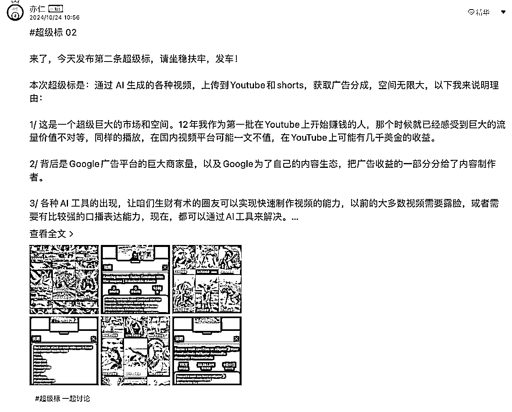
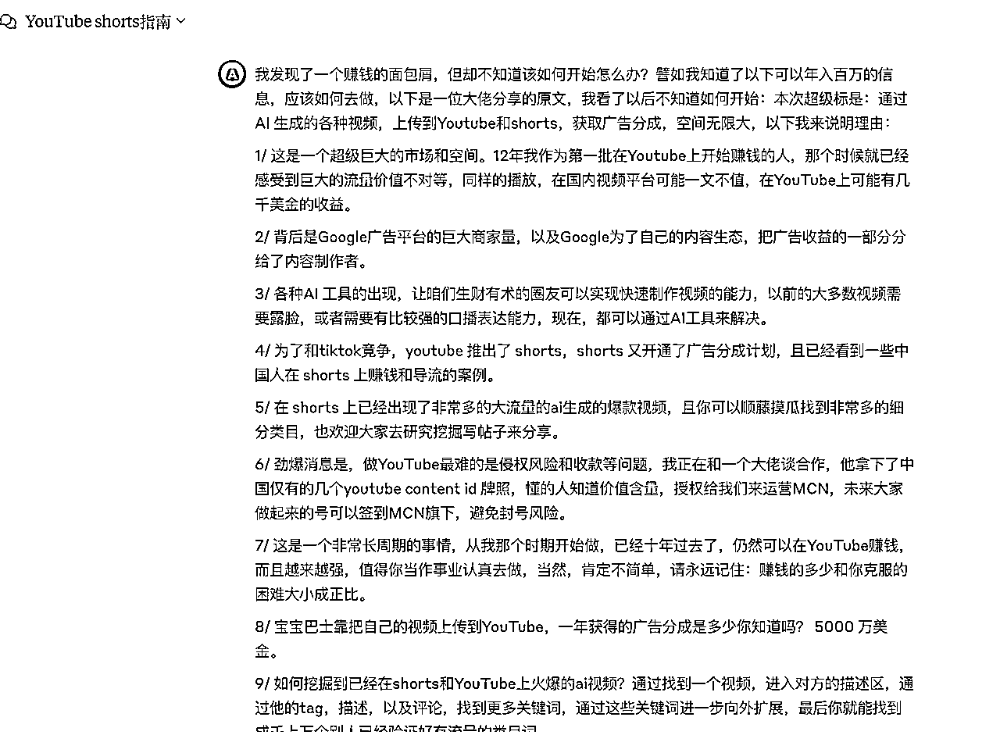
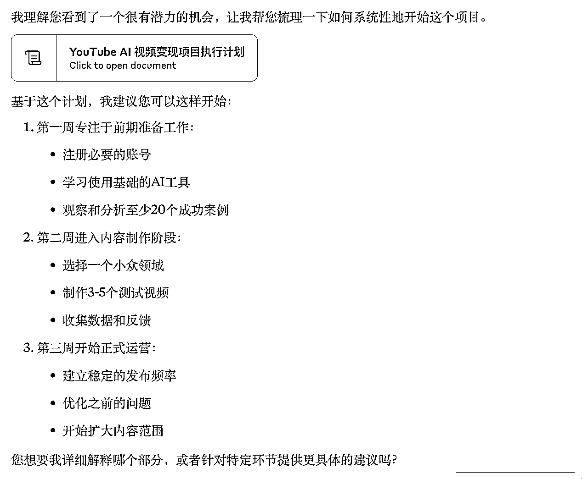
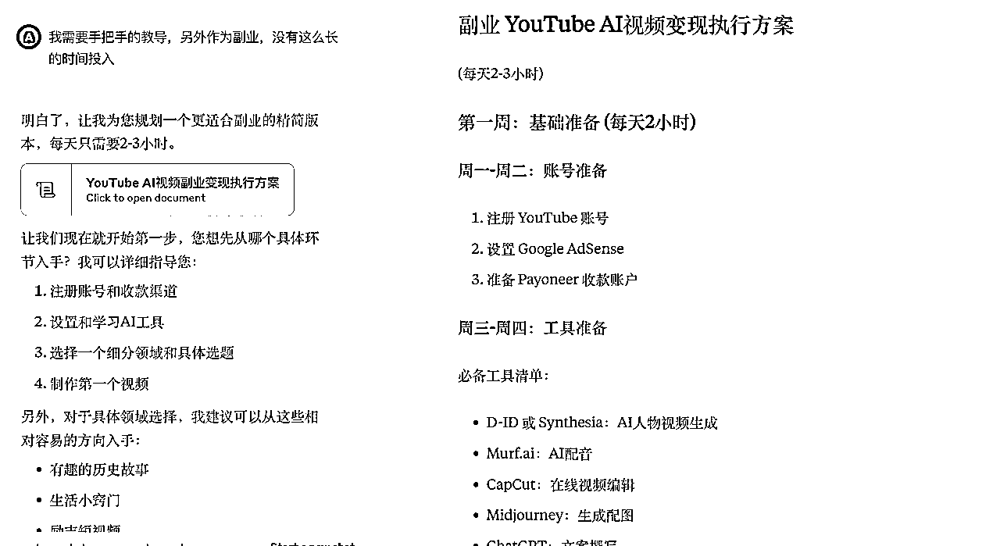
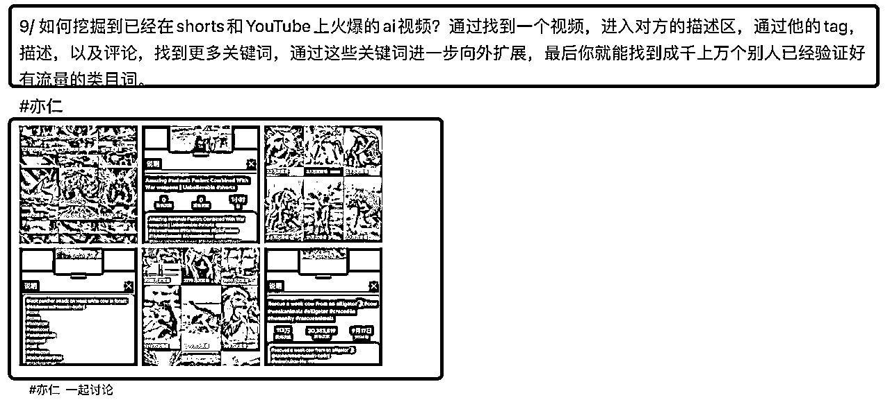
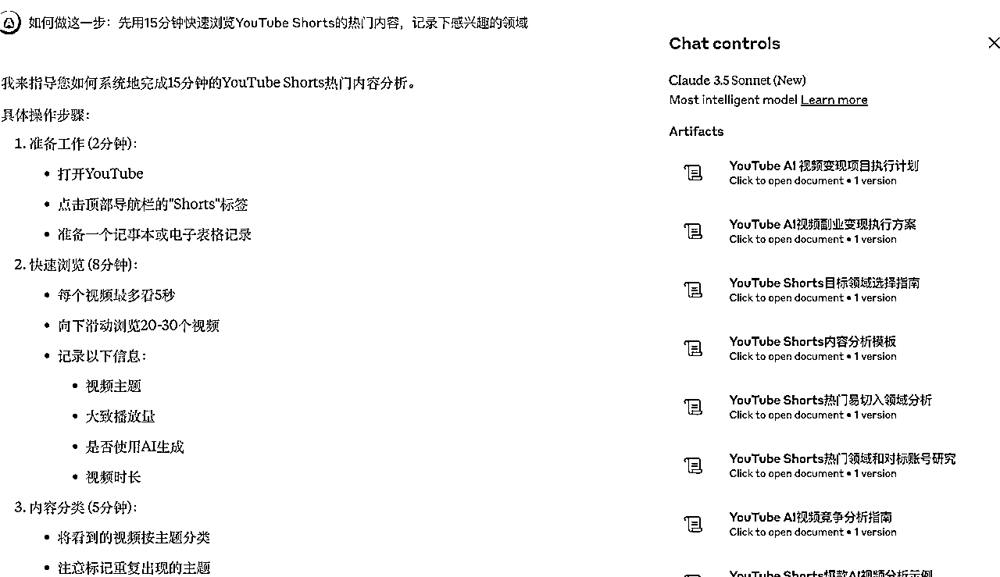
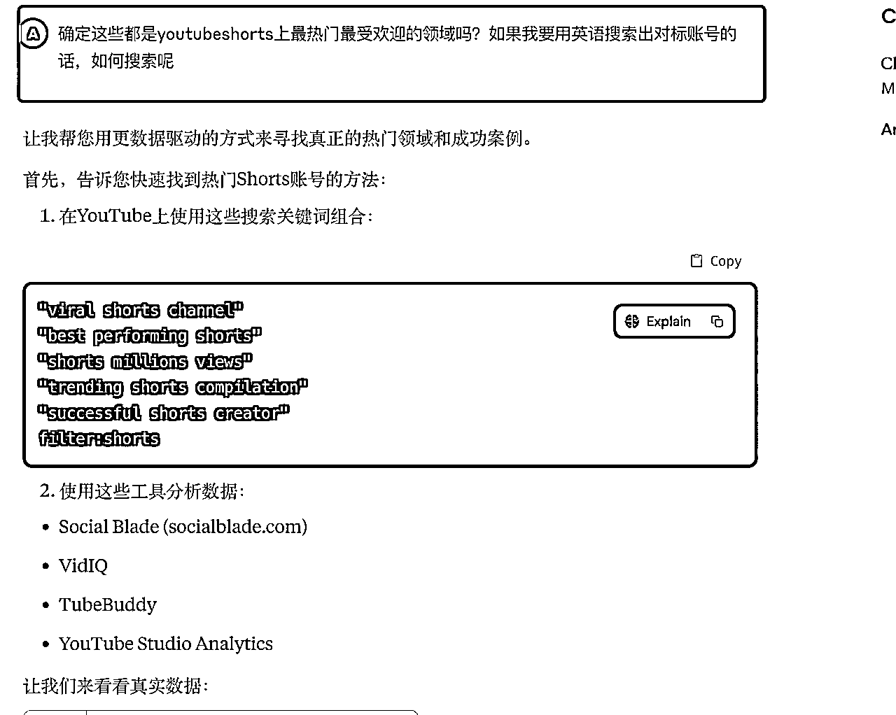
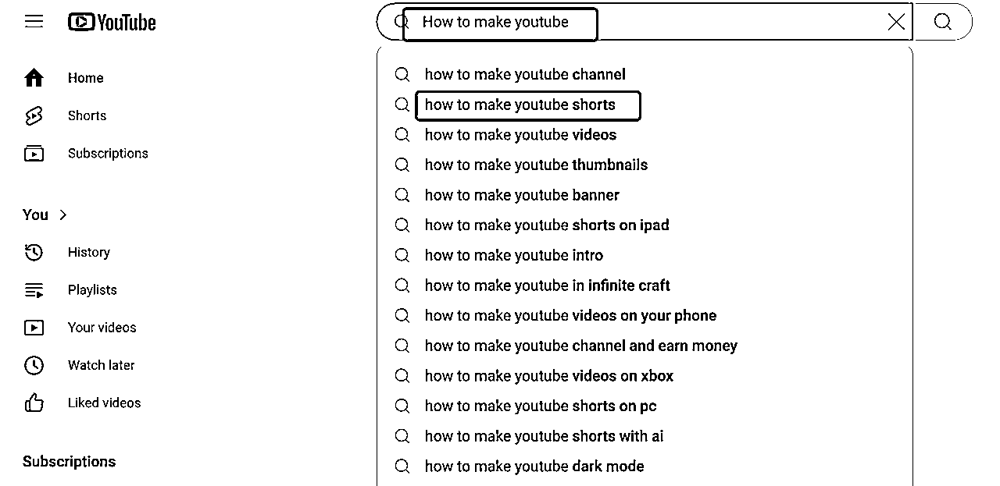
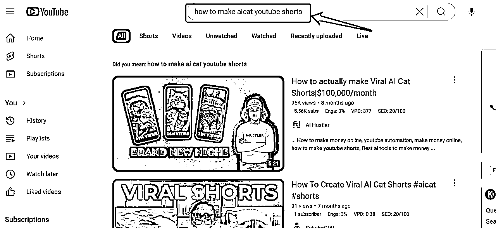
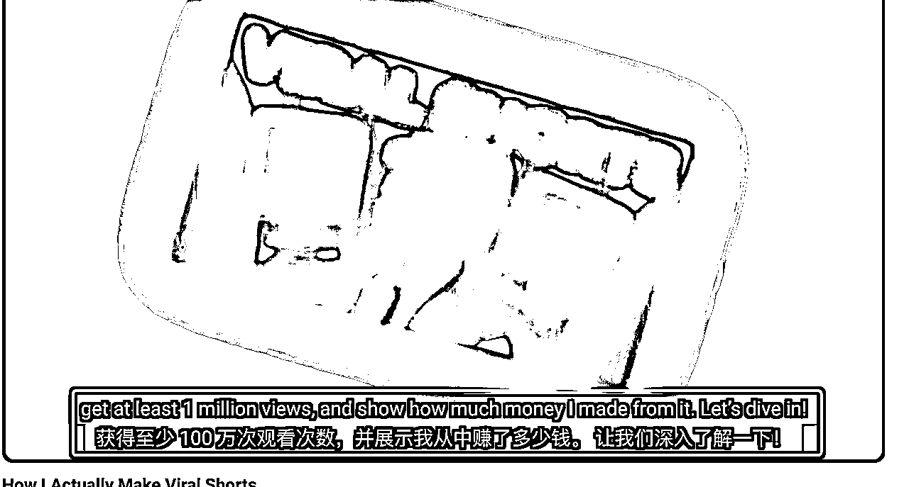

来源：https://zxl48u4vdl4.feishu.cn/docx/I9Mvd1bdeovgF7xlyjDcyjwcnac
亦仁大大说过：“真正好的项目，都是从面包屑开始。”
一开始看到youtube shorts超级标的时候，不知从何开始。
不过没关系，这个超级标下面还有一句：“不要说期待，要自己去研究，然后开干。赚钱最怕等着别人喂东西，别人给个线索，剩下来的就全是自己研究。”
既然面包屑都有了，怎么找到这个面包就得靠自己努力了。

一开始我还没在星球看相关的经验人士分享，而是转向了我的老朋友---ai求助。我不会没关系，ai会就好了。
不过建议大家还是可以先看看星球，先搜一下，说不定可以少走弯路嘛。
把亦仁大大分享的面包屑投喂过去。（这一步大家可以随便选择ai工具，只要能回答你的问题就行。）



通过ai的指导，我知道了大概但我还是不知道如何开始。
想起之前加入视频号，闲鱼航海的时候，这些全新项目都是从0到1。我从中学会了任何新项目开始都不要想着创新，而是找到对标，看别人怎么干，再模仿。
那么我先去看看，youtube short上有什么样的热门视频可以让我模仿的。
于是，我刷了大概5分钟。有搞笑的，有教程的，有各种各样的，就像国内的短视频平台一样丰富。但还是对我没啥帮助。这时候，我又想起了亦仁大大发的“面包屑”，看看有没有被我遗漏的线索。
这个“面包屑”不仅告诉我们如何找，还给出了几个账号。

于是，我就去搜他分享的这几个对标，顺藤摸瓜我搜到了更多的对标视频。
同时，我的目光还转向了tiktok。既然YouTube shorts也是这种模式的话，那么tiktok的对标不就等于YouTube shorts对标吗？
通过搜索相关关键词，经过一顿刷，我大概知道了一些ai视频方向。
接下来，怎么做视频。我看着那些视频，有点陌生又有点熟悉。没关系，我有好朋友ai。
我有个很有帮助的经验：你遇到的问题，绝对不会只有你一个人遇到了，上网搜搜看有没有解决方案。不会做这种视频，肯定互联网有人分享，那我就搜搜看。
那就搜。
如果还是不会搜，那就问我们的ai好朋友。我的第二个经验：把ai当成呼吸一样自然。不知道的就问ai。有这么一个最强大脑，为啥不用呢？


搜索结果以及过程我就不展示了，想做的建议下场自己干。把手弄脏了才知道，原来是这样的。
同时很多的灵感也会在干的时候蹦出来。
当我已经找到了一些对标，接下来，如果我也想做这样的视频，如何做？不会没关系。
继续搜。
建议大家多用Google,把它当成你的第二大脑简直不要太爽。
不会的东西，多使用“How to xxx”句型去搜。用你想干的任何事去替代xxx。


结果是不是很惊喜？同样的，如果你想看看老外如何搞钱的，也可以用这个句型搜一下。
搜到了这类教程多去看看。在我看了几个账号学习后，大概知道了步骤，而且很多博主还给了相关的promt，可以说手把手教了，总结了一下：
第一步：找个ai工具生成故事：chatgpt
第二步：生成图片:chatgpt/ Midjourney/ Leonardo ai(生成连续的故事不错，图片可以加移动)
第三步：如果有动画的用ai工具生成会动的图，像ai猫，动物融合等视频可以用即刻，可灵ai。
第四步：上剪辑工具进行剪辑，注意音乐版权问题，可以从YouTube音乐库里下载无版权的。国外很重视版权，动手之前先去了解一下。
研究的时候用空余时间做了三个视频，一个动物融合的一部分，一个讲故事的，还有个ai猫咪。
第一个视频不是很好，漏洞比较多，但是完成大于完美。至少我自己动手了一遍。
以上就是从发现面包屑到自己上手的全部分享。希望过程对大家有帮助。
关于国内如何使用魔法以及如何开多个账号的分享，大家也在国内平台搜索试试，也可以了解到不少。
另外，如果觉得看英文视频吃力的。丝滑的插件工具奉上：https://immersivetranslate.com/en/download/
拥有了它，英文字幕变双语字幕，不要太丝滑。

祝大家学学习丝滑，搞钱丝滑！